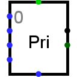

| Library: | Plexers |
| Introduced: | 2.3.0 |
| Appearance: |  |
The component has a number of inputs on its west edge, with the first
labeled 0
and the other numbered from there. The component determines
the indices of the inputs whose values are 1, and it emits the highest index.
For example, if inputs 0, 2, 5, and 6 are all 1, then the priority encoder
emits a value of 110. If no inputs are 1, or if the component is
disabled, then the output of the priority encoder is floating.
The priority encoder is designed so that a number of encoders can be daisy-chained to accommodate additional inputs. In particular, the component includes an enable input and an enable output. Whenever the enable input is 0, the component is disabled, and the output will be all floating bits. The enable output is 1 whenever the component is enabled and none of the indexed inputs are 1. Thus, you can take two priority encoders and connect the enable output of the first to the enable input of the second: If any of the indexed inputs to the first are 1, then the second will be disabled and so its output will be all floating. But if none of the first's indexed inputs are 1, then its output will be all-floating bits, and the second priority encoder will be enabled and it will identify the highest-priority input with a 1.
An additional output of the priority encoder is 1 whenever the priority encoder is enabled and finds a 1 on one of the indexed inputs. When chaining priority encoders together, this output can be used to identify which of the encoders was triggered.
When the component is selected or being added,
the digits '1' through '4' alter its Select Bits
attribute
and the arrow keys alter its Facing
attribute.
None.
None.